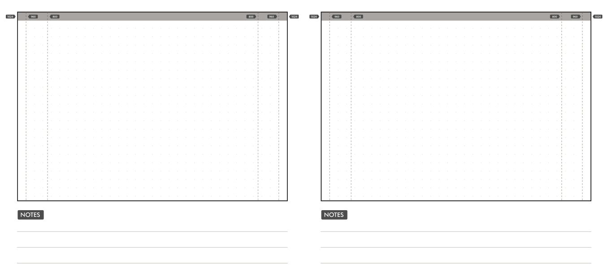
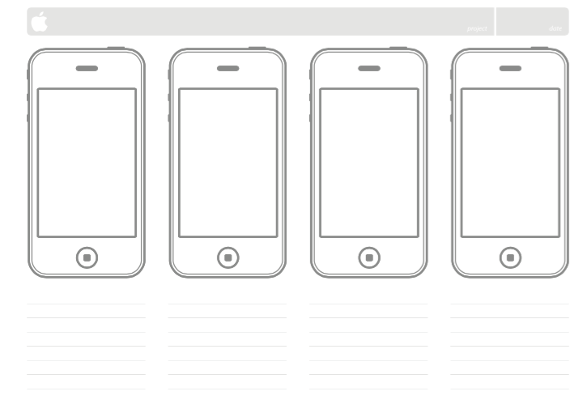
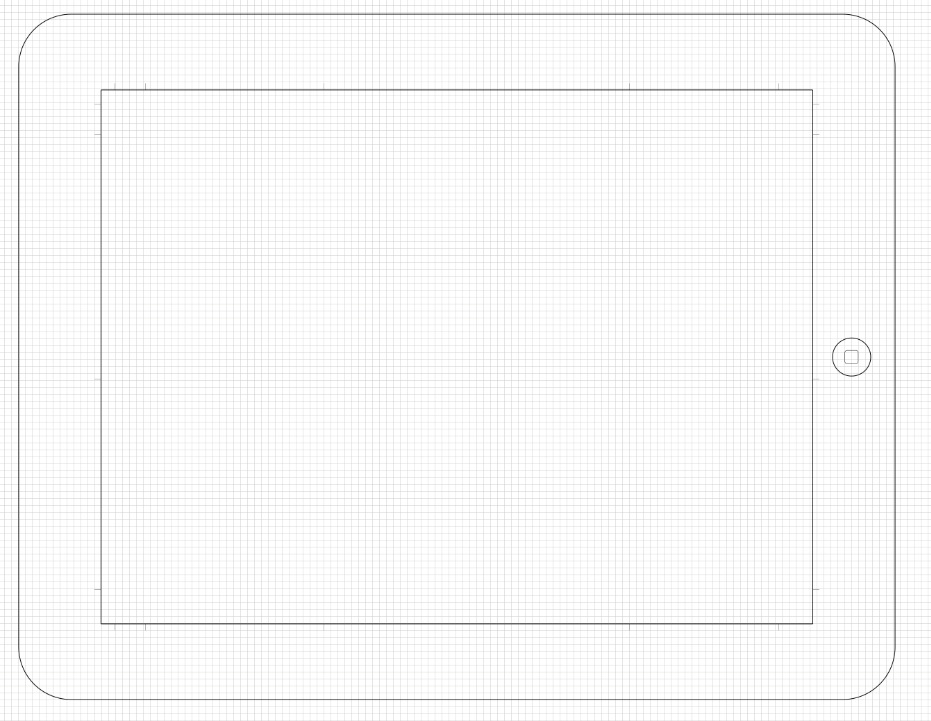
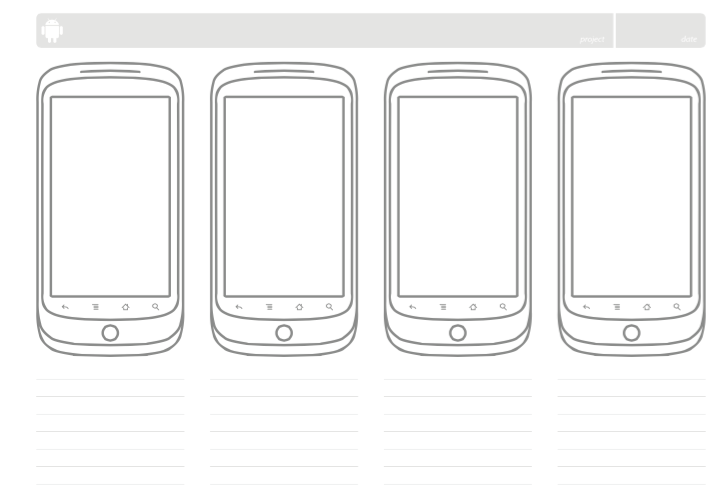

# Lab - Task Analysis, from scenario to wireframe
Lab exercises to help you master the subject material and to complement the lecture material for Introduction to Interaction Design (F27DX).
#Overview
This lab provides activities to assist you in preparing and finalizing a prototype (important for the final coursework submission)
These exercises help you develop critical thinking for your specific design/problem space/task.
# Exercise 1
Describe one out of at least three scenarios for your problem space, bearing in mind, login/signup are not among them.
# Exercise 2
Perform a task analysis for at least one scenario for your problem space.
# Exercise 3
Sketch and describe a Wireframe prototype for one scenario for your problem space.
You are welcome to make use of the exemplars for paper-based prototyping below.
Once you have some general ideas of the tasks (triggers, end-states, experiences etc.), consider converting your flowchart to a digital version. You could, for example, use this Creately HTA flowchart example and tool.
---



